Aspects économiques du sujet de l’efficacité énergétique appliqué au secteur du logement :
…et pas (ou très peu) les questions techniques au cœur du sujet :
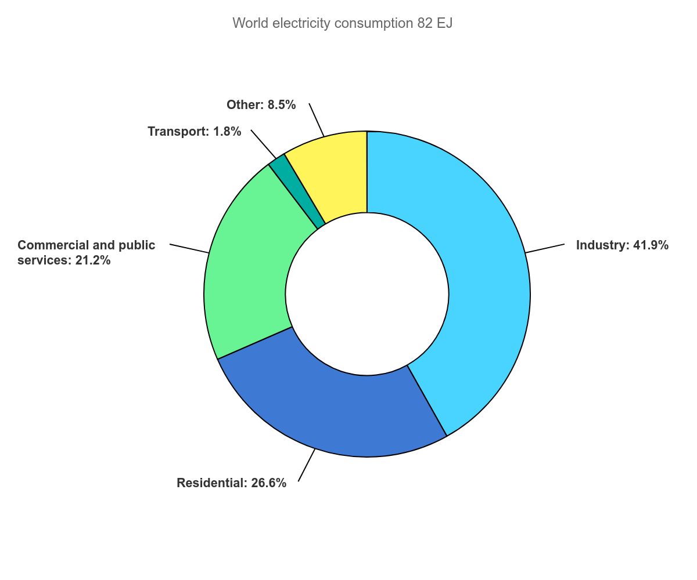
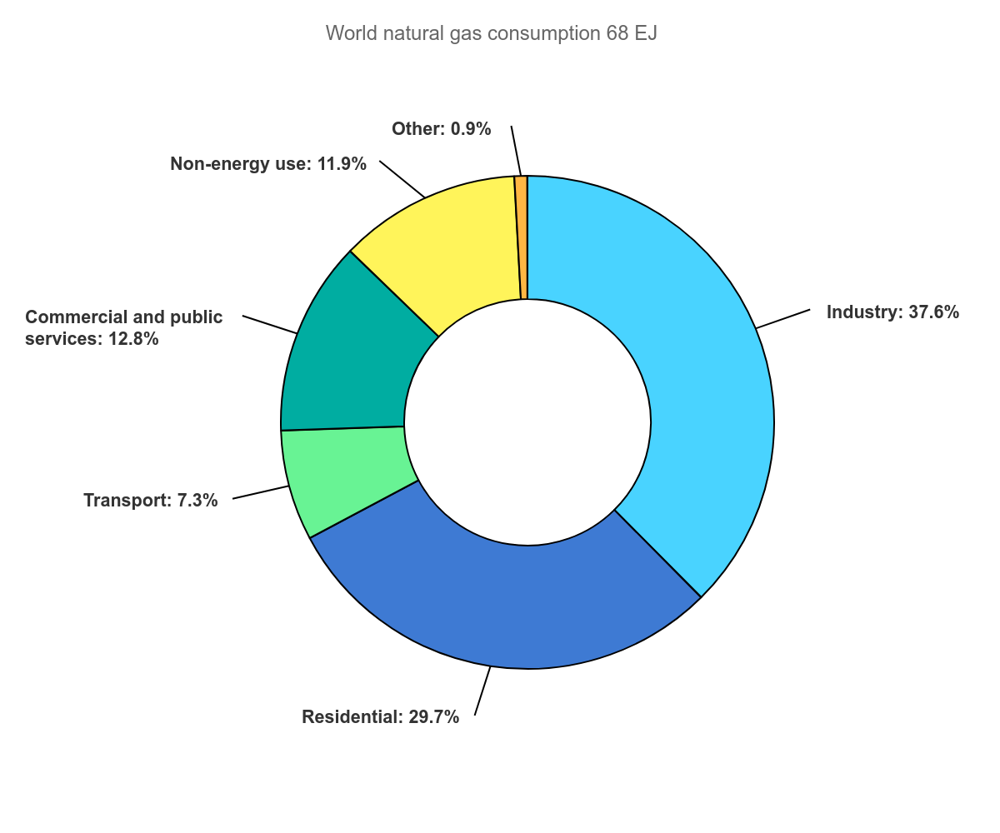
Données : International Energy Agency, 2019
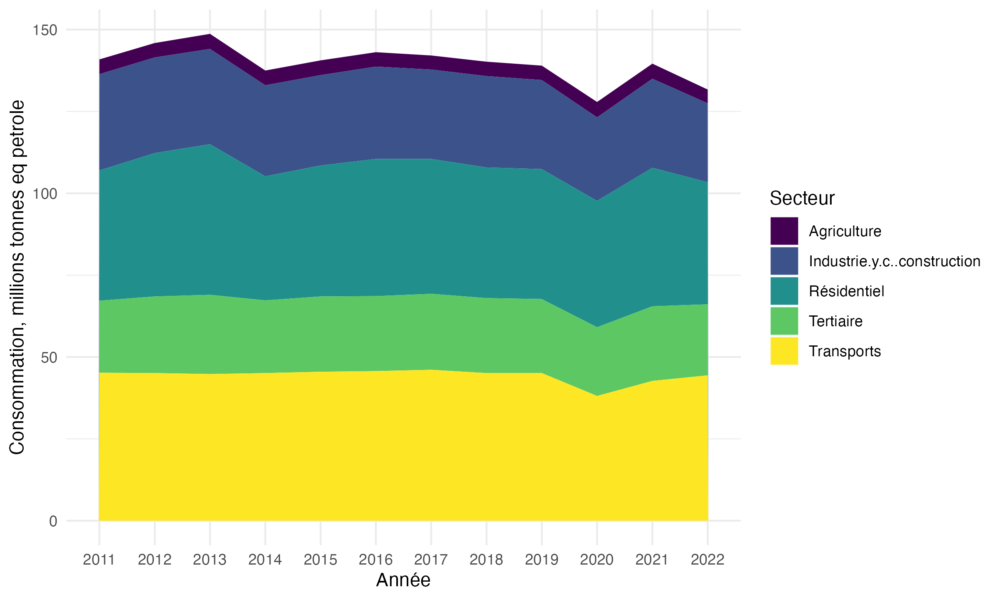
En France, part résidentiel > part industrie ; part résidentiel monte pendant COVID
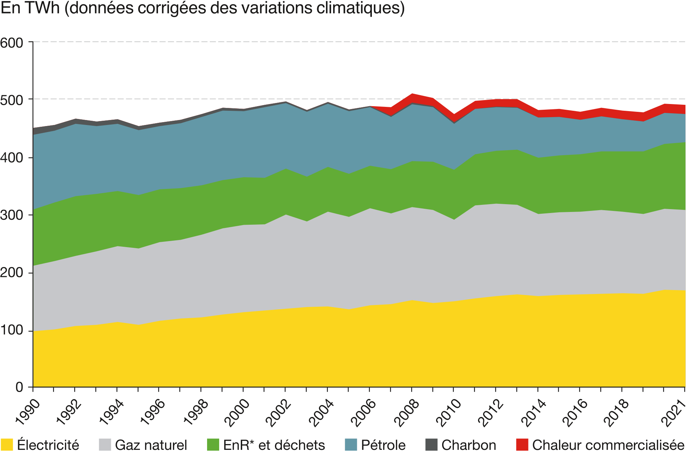
Part croissante de l’électricité, mais pétrole + gaz ~50% en 2021
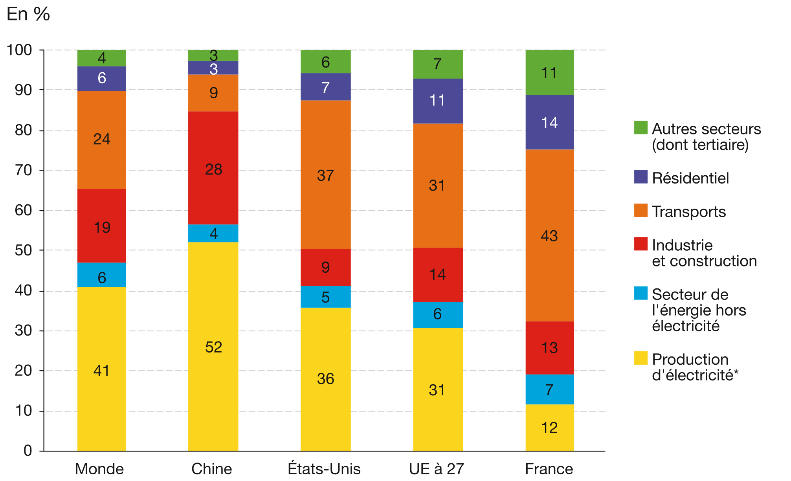
ATTENTION que la consommation finale du secteur \(\Rightarrow\) pas d’émissions indirectes
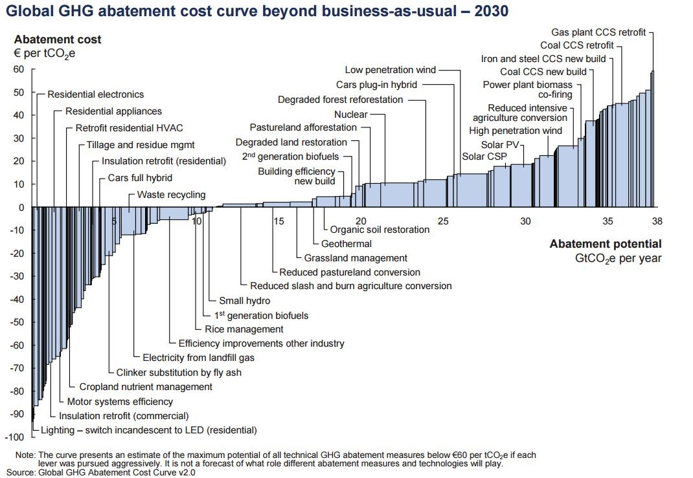
Le secteur résidentiel présente plusieurs pistes prioritaires à coût faible/négatifLe potentiel mondial au niveau mondial selon le GIEC (2022):
Jusqu’à 2050, […] 61% (8.2 GtCO2) des émissions des bâtiments peuvent être atténuées. Les politiques de suffisance qui évitent la demande d’énergie et de matériaux contribuent à hauteur de 10 % à ce potentiel, les politiques d’efficacité énergétique à hauteur de 42 % et les politiques d’énergies renouvelables à hauteur de 9 %.
Bâtiment neuf vs. ancien, encore selon le GIEC (2022) :
La plus grande part du potentiel d’atténuation des nouveaux bâtiments est disponible dans les pays en développement, tandis que dans les pays développés, le potentiel d’atténuation le plus élevé réside dans la rénovation des bâtiments existants.
\(\Rightarrow\) rénovation est l’enjeu essentiel pour la France
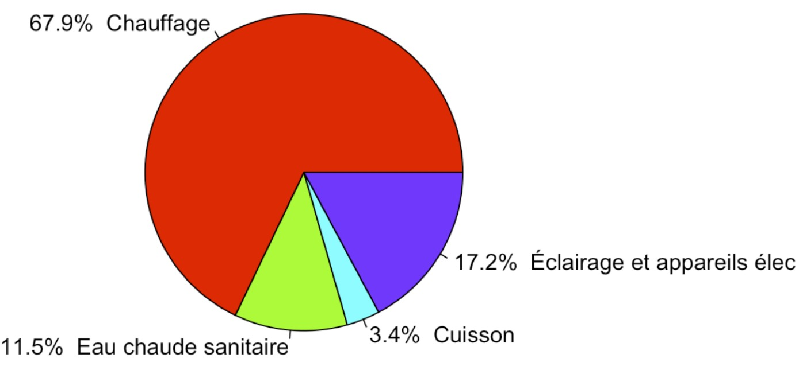
Chauffage est l’usage du premier ordre \(\Rightarrow\) la rénovation cible l’efficacité du système de chauffage & la performance thermique
Quantité de service énergétique produite par unité d’énergie utilisée.
Formalisation:
\(\Rightarrow\) efficacité énergétique est \(\alpha = \frac{s}{E}\)
\(\text{CO}_2 = \text{Pop} \times\) \(\frac{m^2}{\text{Pop}}\) \(\times\) \(\frac{E}{m^2}\) \(\times\) \(\frac {\text{CO}_2}{E}\)
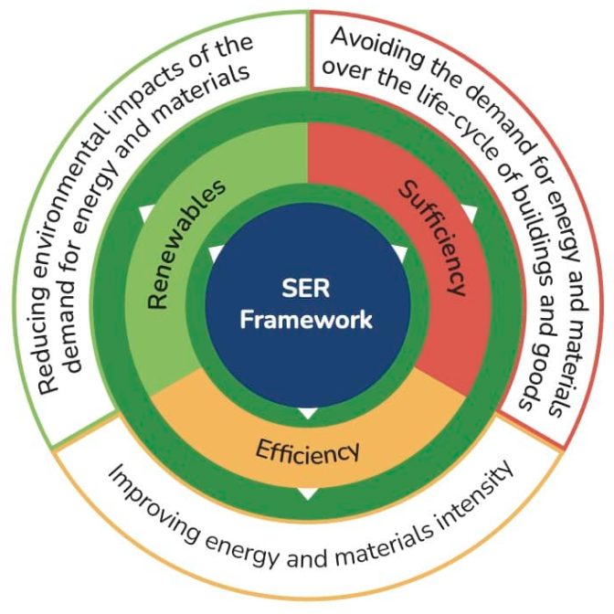
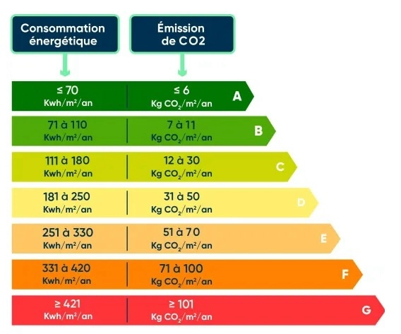
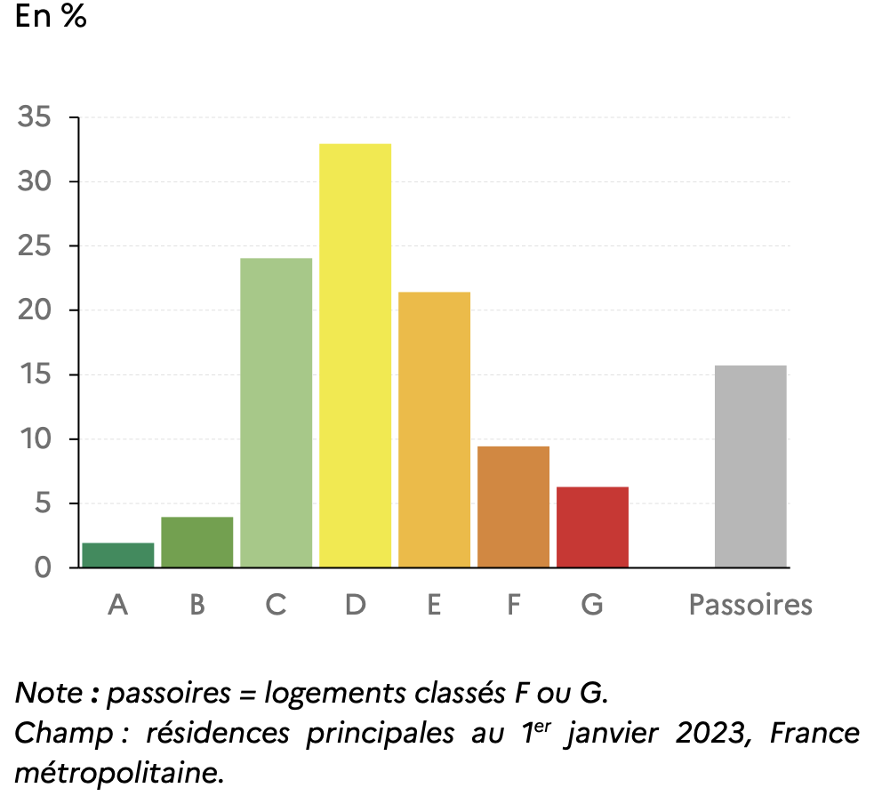
Rénovation est un projet d’investissement
Pour décider sur l’investissement, les gains cumac sont à comparer au coût de la rénovation \(C(\alpha)\)
La valeur actualisée nette (VAN) de notre projet qui porte l’EE au niveau \(\alpha\) :
\[VAN(\alpha) = \sum_{t=0}^T \frac{- p_t \Delta E_t(\alpha)}{(1+i)^t} - C(\alpha)\]
Une barrière majeure à l’investissement est la mesure des \(\Delta E_t(\alpha)\) : mesure rarement faite ex post, fiabilité limitée de la modélisation ex ante
L’augmentation de la consommation d’énergie suite à l’amélioration de l’efficacité énergétique
Peut exister sur plusieurs niveaux :
Dérivée de la fonction égale à zéro :
\[\frac{\partial U(s, \alpha)}{\partial s} = 0 \Rightarrow -2(s - \bar s) - \frac{p}{\alpha} = 0\] \(\Rightarrow s = \bar s - \frac{p}{2 \alpha}\), \(\Rightarrow s \uparrow\) quand \(\alpha \uparrow\) (vérifiez ça)
\(E = \frac{s}{\alpha} = \frac{\bar s}{\alpha} - \frac{p}{2 \alpha^2} = \frac{2 \bar s \alpha - p}{2 \alpha^2}\) – influence sur \(E\) ambigüe
L’effet rebond peut attenuer les économies d’énergie réalisées
Une nuisance pour l’étude des économies d’énergie \(\Rightarrow\) de la VAN de l’investissement
\(\to\) une des raisons de energy efficiency gap : l’écart entre économies d’énergie prédites et celles observées1
Warning
Le confort est la raison d’utilisation d’un équipement \(\Rightarrow\) effet rebond pas indésirable en soi, même si économies d’énergie diminuent
La rénovation concerne au moins 2 acteurs : le ménage et l’artisan
Souvent, beaucoup plus de parties :
Aléa moral : une situation d’asymétrie d’information où une partie n’observe pas parfaitement les actions entreprises par l’autre partie
P. Christensen, P. Francisco, E. Myers, M. Souza; Decomposing the Wedge between Projected and Realized Returns in Energy Efficiency Programs. The Review of Economics and Statistics 2023
Approche machine learning pour prédire la consommation (théorique) en absence de rénovation \(\Rightarrow\) estimation des économies “réelles”, à comparer aux…
…économies telles que prédites par le modèle technique (engineering model). L’écart entre les deux est calculé et décomposé en :
Économies prédites par modèle technique : 29% ; économies estimées (“réelles”) : 15%, donc
\(\frac{\text{économies modèle}-\text{économies réelles}}{\text{économies modèles}} = 49\%\) , dont :
L’effet de l’isolation des mûrs (typiquement classée prioritaire, après les combles) est très sur-estimé
Un biais plus modeste, mais significatif, pour remplacement des fenêtres
Un artisan donné est suivi de chantier en chantier pour identifier la qualité de son travail (indépendante des spécificités de chaque bâtiment)
Question : que se passerait-il au energy efficient gap si tous les artisans aurait la qualité des travaux au niveau des meilleurs 5% de l’échantillon ?
Réponse : il diminuerait de 49% à 29%
\[VAN(\alpha) = \sum_{t=0}^T \frac{-\Delta_t(\alpha)}{(1+i)^t} - C(\alpha)\] La valeur actuelle nette (VAN) estimée pour chaque logement séparément
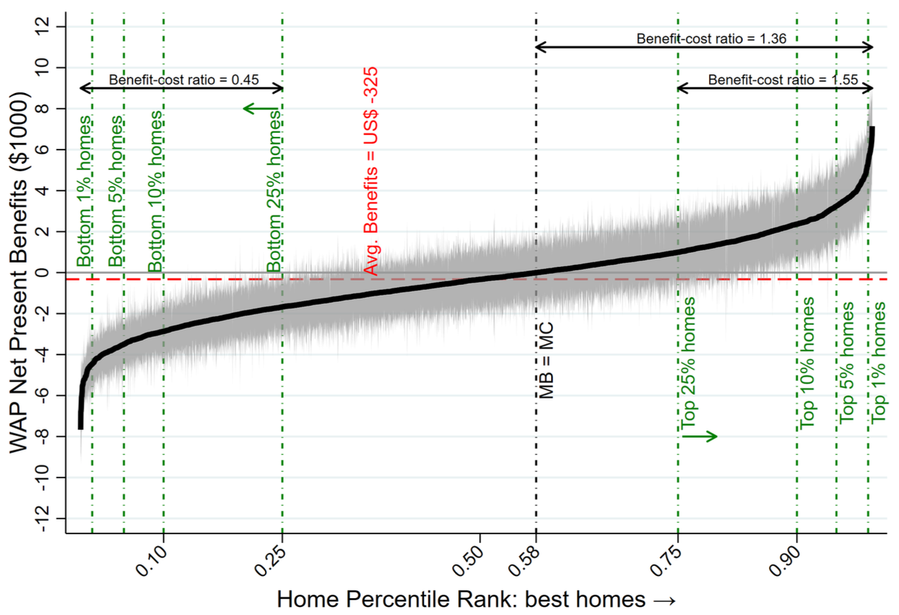
Le DPE ne repose pas sur des données de consommation, mais sur un modèle ingénieur 3CL (à partir de 2021)
Ces hypothèses comportementales sont très simplifiées : La température intérieure “de confort” est supposée 18°C en hiver et 28°C
Pourquoi ne pas se baser sur des factures de consommation passée pour les bâtiments anciens ?
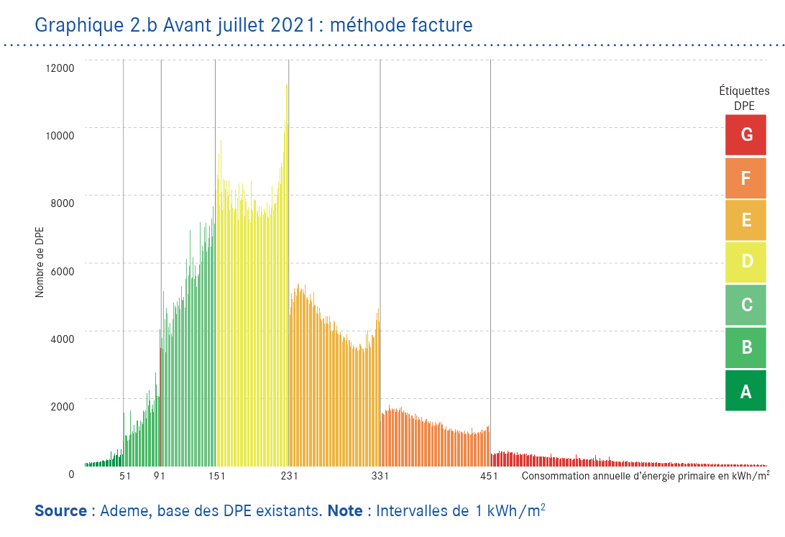
Consommation conventionnelle en kWh/m2 et le label DPE. Méthode facture.
Aja et al (2024) estiment la part des DPE manipulés à 4 %
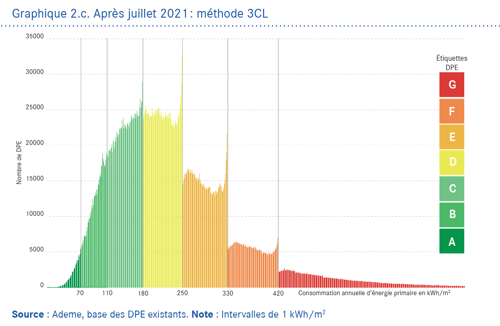
Consommation conventionnelle en kWh/m2 et le label DPE. Méthode 3CL.
La part des DPE manipulés passe à 1.7 % (moins que la moitié d’avant-2021)
Astier et al (2024) ont utilisé des données de Crédit Mutuelle appariées aux DPE des ménages
Résultat : la variation de la consommation entre labels est largement sur-estimée par 3CL
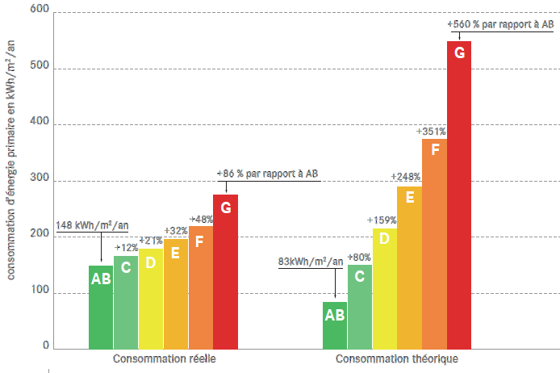
Consommation estimée vs. modélisée
Écart entre A et G : 560 % dans 3CL, 86 % dans les données
Effet rebond pas pris en compte par le modèle 3CL
A partir du juillet 2024, modification des paramètres 3CL qui sont reconnus étant pénalisant pour les petits logements
Besoin d’études empiriques supplémentaires, rendues possibles par les nouvelles données sur la consommation (telles que produites par le SDES, l’agence ORE et disponibles pour les chercheurs)